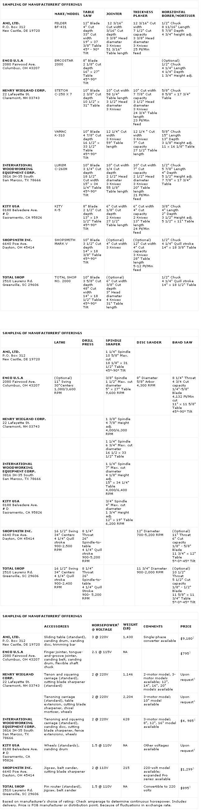

DESIGN YOUR DREAM WORKSHOP, PART VIII
In this final installment of our eight-part series on stationary woodworking tools, we'll look at an engineering marvel: the multipur pose, or combination, shop tool. True to their names, these machines each combine the function of five or more popular wood shop tools into a single unit . . . one that takes up far less floor space than even a carefully chosen assortment.
European woodworkers, who put a premium on space, provide a good market for combination tools. Here in the States, we tend more toward single-function machines . . . but lathe-based multipurpose designs (Shopsmith and Total Shop) are still popular in home shops.
The lathe-style machines use a variable-speed headstock equipped with a quill feed. With the tool positioned horizontally, the addition of a table converts the lathe into a table saw, a horizontal borer, or a disc sander. In a vertical mode, the lathe becomes a drill press. Accessories, driven by the headstock, include a jointer, bandsaw, jigsaw, and belt sander.
European manufacturers generally build their combination machines around table saws, which also drive jointers and thickness planers. A spindle shaft extended horizontally works together with a three-axis table for slot mortising or side-boring, and a vertical shaft is included for spindle shaping. Options include sanders, tenoners, and jointer-planer blade sharpeners. One exception is the Emcostar 2000, which is a combination table saw and bandsaw. A spindle shaper and disc sander are included in the basic machine, and lathe and mortiser attachments are optional.
For the cost of one of the bigger machines, you could fill a large shop with individual tools. But if your budget and work space are small, a moderately priced combination machine might be the answer. Just make sure that each component has the same characteristics you'd look for in a solo tool.
|
 |
|
|